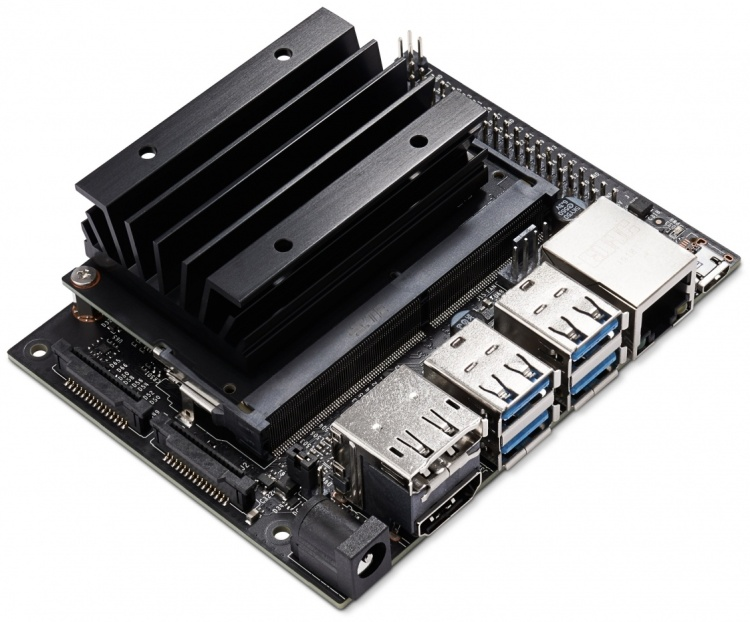
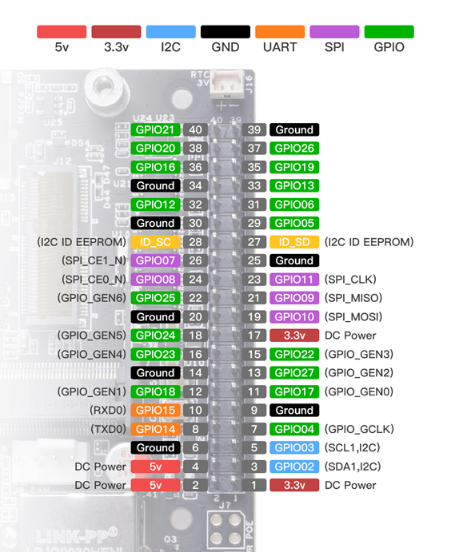
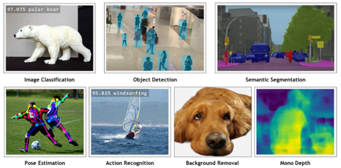

Jetson Nano

Jetson Nano: базовый одноплатный компьютер NVIDIA для использования ИИ.
- Работает на SoC Tegra Х1
- 2 или 4 Гб оперативной памяти
- Операционная система - JetPack (Ubuntu 18.04)
- Загружается с microSD, SSD или eMMC
- Потребляет 5–10 Вт.
- USB, HDMI, Ethernet порты
- 40-контактный GPIO-разъём
- Поддержка UART, I2C, SPI, 2 ШИМ порта

Jetson Inference — это библиотека и набор примеров для Jetson, упрощающие инференс моделей компьютерного зрения с ускорением TensorRT через API C++/Python.
